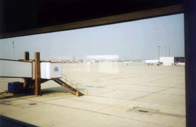
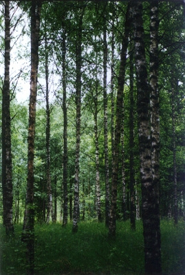
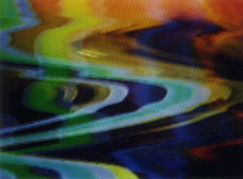

HabiTEXT
"There is nothing outside of the text."- Jacques Derrida

the airport text
Wanting to know where one is and how to navigate seems
to be part of human nature. Even though the navigational structures have
changed with technological alterations,the model of navigation used by the
traditional MUSH is that of the mediaeval traveler- moving through spaces
arranged along the cardinal points. From the networked perspective, such
a worldview can seem archaic.
 MUSHes allow users to interact
in a virtual "environment." The transparency of that architectual
environment is often assumed. Post-structural analysis suggests that all
experiences are mediated, but the transparency of the MUSH mode of interaction
is not because the user is unaware of the mediated nature of the text but
because the text is not aware of itself. This reading constrains the building
of networked communities to that which can be fit into a Cartesian cosmography.
The ontology of the networked environment has a complexity and flexibility
that is not utilized by a transparent treatment.
the forest text
Using the internet to create communities, because of its novelty, is worthy
of study and exploration. Whether it matters if this creation of community
takes place in an envisioned "natural" landscape or in a multidimentional
hyper-environment is still to be answered.

the T.V. text
HabiTEXT is not a space designed as a forum for the users to engage in intellectual
discussion but a habitable critical discourse.
Our attempt is an environment where transparency is transposed with textual
autospectation, purpose with play and hierarchy with anarchy.
The text is inhabitable.
HabiTEXT